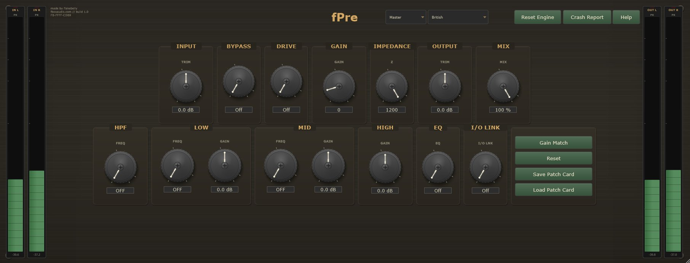
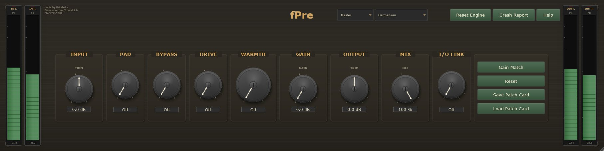

Preamplifier and Tone Processor
Six Preamp Topologies - VST3 / AU
fPre is a stereo preamplifier with six modes. British mode models a Class-A discrete transformer-coupled preamp with inductor EQ. American mode models a FET solid-state discrete preamplifier with transformer I/O. Tube mode models an all-tube pentode preamp with output transformer. Clean mode provides a transparent discrete preamp. Germanium mode models a PNP germanium transistor preamp. Console mode models an IC op-amp console strip.
The drive character comes from the signal path itself. Push the gain and the Class-A stage saturates naturally - there is no separate saturation knob. The impedance switch changes how the input transformer couples with the source, affecting both level and tonal colour, just as it does on the real hardware.
British mode includes a three-band inductor EQ modelled on the classic 1073 channel amplifier - Low shelf, Mid peak, and fixed 12kHz High shelf with stepped frequency selectors. Every instance generates a unique serial number that seeds subtle hardware tolerances affecting transformer colour, EQ frequency drift, gain scaling, and saturation onset.


Class-A transformer-coupled preamp with 3-band inductor EQ (1073-style). Stepped gain in 5dB increments, impedance switching, HPF, and drive.
FET solid-state discrete preamp with transformer I/O and selectable output transformer winding tap. Clean to warm depending on drive.
All-tube pentode preamp with output transformer and power supply sag. PNP germanium transistor with pad and warmth controls.
Clean mode provides a transparent discrete preamp for colourless gain. Console mode models an IC op-amp console strip with the character of a classic mixing desk input.